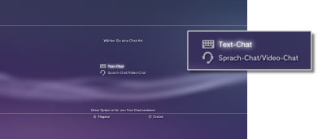
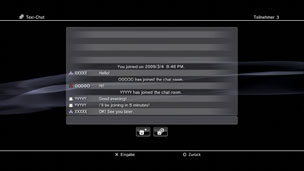

Starten oder Beenden eines Text-Chats
Sie müssen eventuell die System-Software aktualisieren, bevor Sie diese Funktion verwenden können.
Sie können einen Text-Chat mit Personen in Ihrer Liste der Freunde abhalten.
Starten eines Text-Chats
1. |
Wählen Sie |
|---|---|
2. |
Wählen Sie |
|
 |
|
3. |
Geben Sie einen Namen für den Text-Chat-Raum ein und wählen Sie dann [O. K.]. |
4. |
Wählen Sie die Freunde aus, die Sie zum Chatten einladen wollen, und wählen Sie dann [O. K.]. |
|
 |
 (Neuen Chat starten).
(Neuen Chat starten). (Text-Chat).
(Text-Chat).Anmerkungen
- Zum Text-Chatten müssen Sie am PlayStation®Network angemeldet sein.
- Für einen Text-Chat wird keine Nachricht mit einer Einladung zum Chatten gesendet.
- Bis zu 16 Personen können einem Text-Chat-Raum beitreten.
- Die Text-Chat-Funktion steht nicht zur Verfügung, wenn ihre Nutzung in den PlayStation®Network-Kontoeinstellungen eingeschränkt ist. Informationen zu Kindersicherungseinstellungen finden Sie unter [Informationen zur XMB™] > [Verwenden der Einstellungen der Kindersicherungsfunktion] in diesem Handbuch.
Beitreten zu einem Text-Chat-Raum
Wenn Sie zu einem Text-Chat eingeladen werden, wird eine Benachrichtigung rechts oben am Bildschirm angezeigt. Wählen Sie  (Chat-Raum (Nur Text)) unter
(Chat-Raum (Nur Text)) unter  (Freunde) und wählen Sie dann den Chat-Raum aus, dem Sie beitreten wollen.
(Freunde) und wählen Sie dann den Chat-Raum aus, dem Sie beitreten wollen.
Anmerkungen
- Wenn [Nicht anzeigen] in [Benachrichtigungen] unter
 (Einstellungen) >
(Einstellungen) >  (System-Einstellungen) eingestellt ist, werden keine Benachrichtigungen angezeigt.
(System-Einstellungen) eingestellt ist, werden keine Benachrichtigungen angezeigt. - Bei den meisten Spieltiteln können Sie während des Spielens einem Text-Chat beitreten. Drücken Sie die PS-Taste am Wireless-Controller und wählen Sie den gewünschten Chat-Raum unter (Freunde) > (Chat-Raum (Nur Text)) aus. Drücken Sie die PS-Taste, um zum Spielbildschirm zurückzuschalten.
- Sie können gleichzeitig bis zu drei Chat-Räumen beitreten. Wenn Sie einem vierten Chat-Raum beitreten, verlassen Sie automatisch den Chat-Raum, dem Sie zuerst beigetreten sind.
- Unter (Chat-Raum (Nur Text)) können bis zu 20 Chat-Räume angezeigt werden. Wenn mehr als 20 Chat-Räume vorhanden sind, werden die ältesten Chat-Räume automatisch gelöscht, sobald neue Chat-Räume geöffnet werden.
Verlassen eines Chat-Raums
Drücken Sie die  -Taste, um den Bildschirm für den Text-Chat zu schließen. Wählen Sie den Chat-Raum, den Sie verlassen wollen, drücken Sie die
-Taste, um den Bildschirm für den Text-Chat zu schließen. Wählen Sie den Chat-Raum, den Sie verlassen wollen, drücken Sie die  -Taste und wählen Sie dann [Verlassen] aus dem Menü „Optionen“.
-Taste und wählen Sie dann [Verlassen] aus dem Menü „Optionen“.
Anmerkung
Wenn Sie das PS3™-System ausschalten oder sich vom PlayStation®Network abmelden, verlassen Sie den Chat-Raum automatisch. Wenn Sie nach dem Verlassen wieder einem Chat-Raum beitreten, wird die Liste der Chat-Eingaben, die während Ihrer Abwesenheit gesendet wurden, nicht angezeigt.
Löschen eines Chat-Raums
Wählen Sie den Chat-Raum, den Sie löschen wollen, drücken Sie die -Taste und wählen Sie dann [Löschen] aus dem Menü „Optionen“.
Das Kontrollmenü
Mit dem Kontrollmenü auf dem Bildschirm für den Text-Chat können Sie folgende Funktionen ausführen.
 |
Einen Freund einladen | Einladen eines Freundes zum Beitreten zu einem Text-Chat-Raum |
|---|---|---|
 |
Teilnehmer-Liste | Anzeigen einer Liste der Teilnehmer im Chat-Raum |